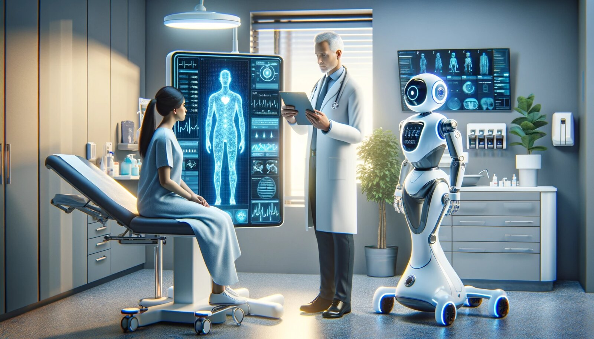
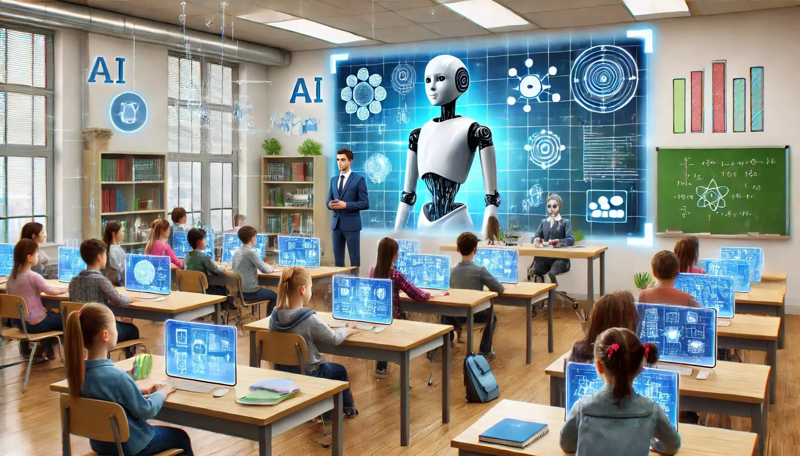

La inteligencia artificial se ha convertido en una herramienta clave que transforma nuestra cotidianidad. En el transporte, optimiza las rutas de navegación y el tráfico en tiempo real. En el entretenimiento, personaliza las recomendaciones de películas, series y música según nuestros gustos. En la salud, facilita diagnósticos médicos más rápidos y precisos mediante el análisis de imágenes. En el hogar y los dispositivos móviles, los asistentes virtuales simplifican tareas diarias mediante comandos de voz. En el ámbito laboral y educativo, potencia la productividad automatizando procesos repetitivos y facilitando el aprendizaje. En definitiva, su aplicación constante impulsa la eficiencia y redefine nuestra forma de interactuar con el mundo.


Salud
La inteligencia artificial está transformando la medicina al predecir enfermedades con mayor precisión y acelerar la creación de tratamientos. Gracias a su capacidad para analizar grandes volúmenes de datos, optimiza el diagnóstico y la atención en tiempo récord. Además, permite personalizar la atención médica de cada paciente, adaptando la prevención a sus necesidades únicas. Esta unión entre tecnología y ciencia humana no busca reemplazar a los médicos, sino potenciar su capacidad de salvar vidas.

Educación
La inteligencia artificial está transformando la educación al personalizar el aprendizaje según el ritmo y las necesidades de cada estudiante. Facilita el acceso a herramientas interactivas que hacen la enseñanza mucho más dinámica, inclusiva y atractiva. Además, optimiza las tareas administrativas de los docentes, liberando tiempo valioso para la orientación y el acompañamiento humano. Esta alianza tecnológica no busca reemplazar el aula tradicional, sino potenciar el desarrollo del pensamiento crítico y las habilidades del futuro.

Emppresas y Negocios
La inteligencia artificial está transformando los negocios al automatizar procesos repetitivos y optimizar la toma de decisiones estratégicas. Permite analizar tendencias de mercado en tiempo real para anticiparse a las necesidades de los clientes y ofrecer experiencias personalizadas. Además, maximiza la eficiencia operativa de las empresas, reduciendo costos y mejorando la productividad de los equipos de trabajo. Esta integración tecnológica no busca desplazar el talento humano, sino potenciar la innovación y la competitivida
Entretenimiento
La inteligencia artificial está revolucionando el entretenimiento al impulsar nuevas formas de creación en el cine, la música y los videojuegos. Permite generar efectos visuales deslumbrantes, composiciones sonoras únicas y mundos virtuales interactivos mucho más realistas. Además, analiza las preferencias de los usuarios para recomendar contenidos hiperpersonalizados en las plataformas de streaming. Esta sinergia entre arte y tecnología abre un abanico infinito de posibilidades para llevar la imaginación humana a nuevos horizontes.